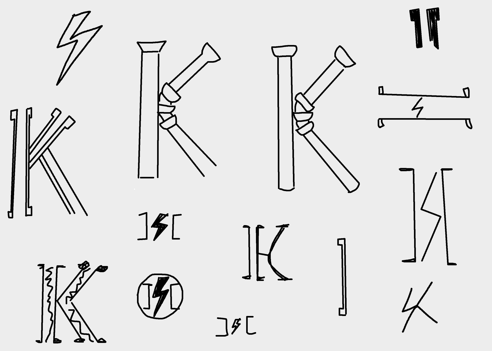
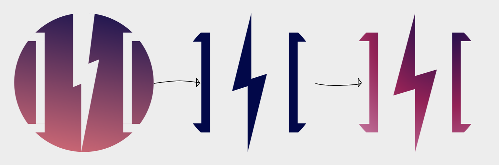

Konduit.Channel - Logo Design
Crypto payment mobile app
Brand Designer | 2025
Konduit.Channel needed a logo that communicates fast, secure payments between blockchain networks. The goal was to create a mark that feels technical and modern while remaining simple and highly scalable for digital use.
Concept
The symbol combines three core ideas behind the product:
- Brackets → Coding + Channel: Inspired by programming syntax, the brackets form an open “pipe,” representing the payment conduit between blockchains.
- Lightning → Speed + Bitcoin Lightning Network: The central bolt references the Lightning Network, the technology enabling instant Bitcoin payments within the app.
- Circle → Unity + Interoperability: The circular container brings all elements together, expressing stability and cross-chain communication.
Design Process

Approach
- Explored variations of pipes representations to symbolize the conduit idea.
- Tested different shapes and sizes for the lightning.
- Opted for brackets as a minimal image of both code symbols and directional channels.
- Tested the symbol at small sizes to ensure strong in-app performance.
- Applied both a solid color and a gradient palette to reflect energy, movement, and modern crypto aesthetics and make it adaptable to context.

Result
A distinctive, scalable logo that represents Konduit.Channel’s core purpose: fast, reliable, cross-chain payments powered by the Bitcoin Lightning Network.